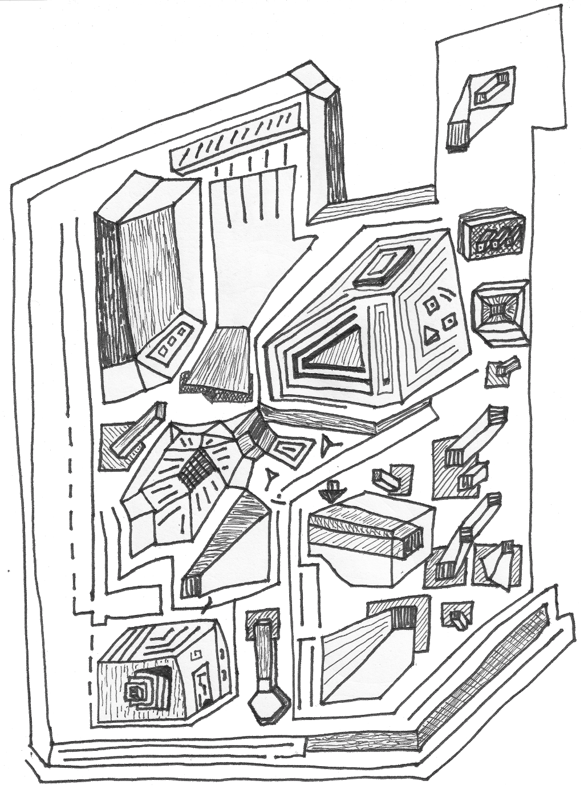
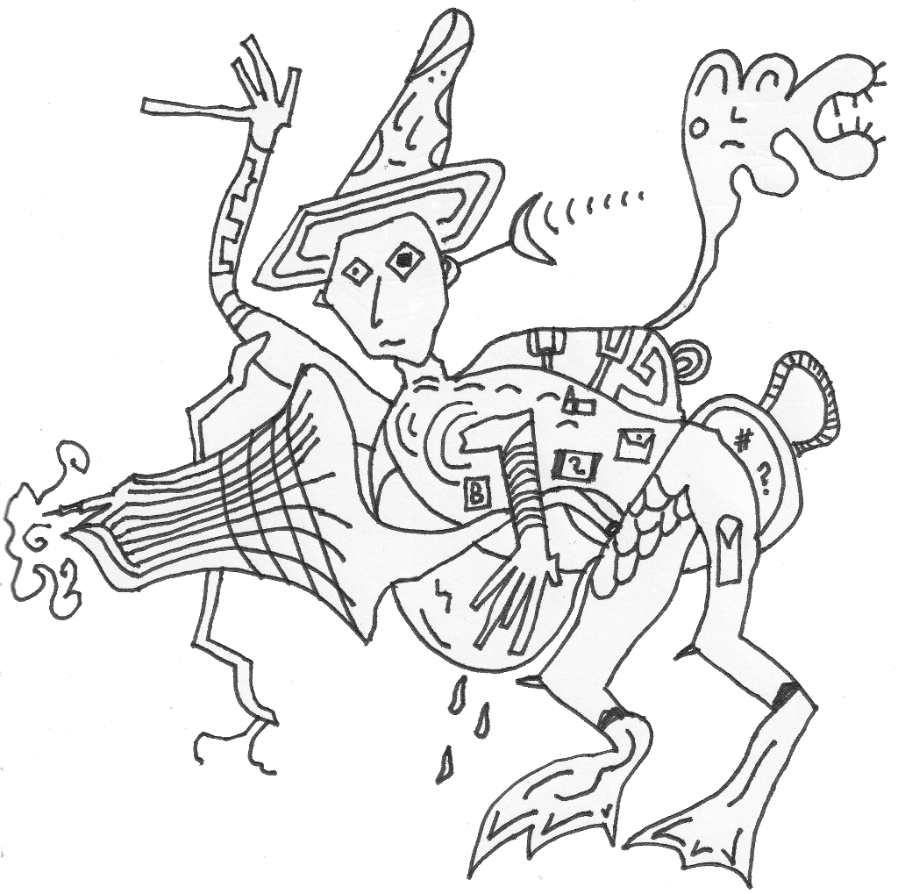
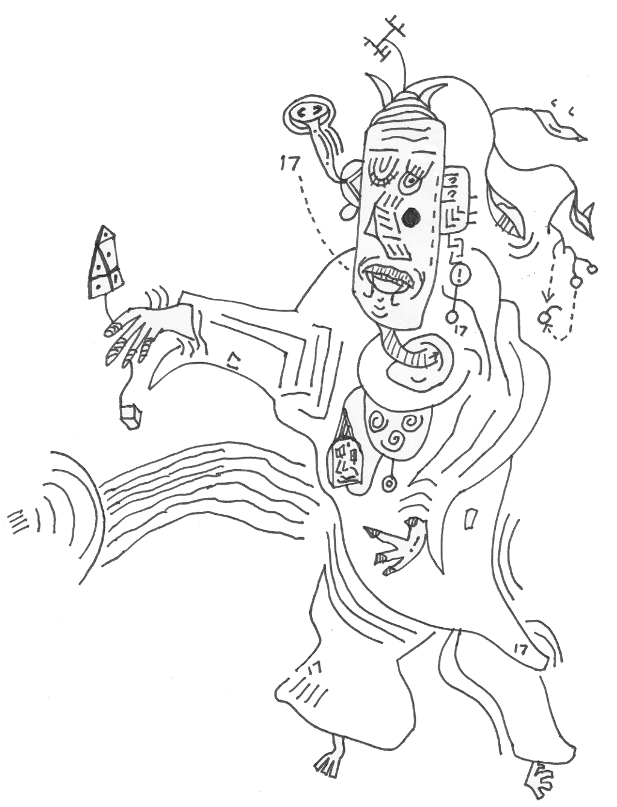
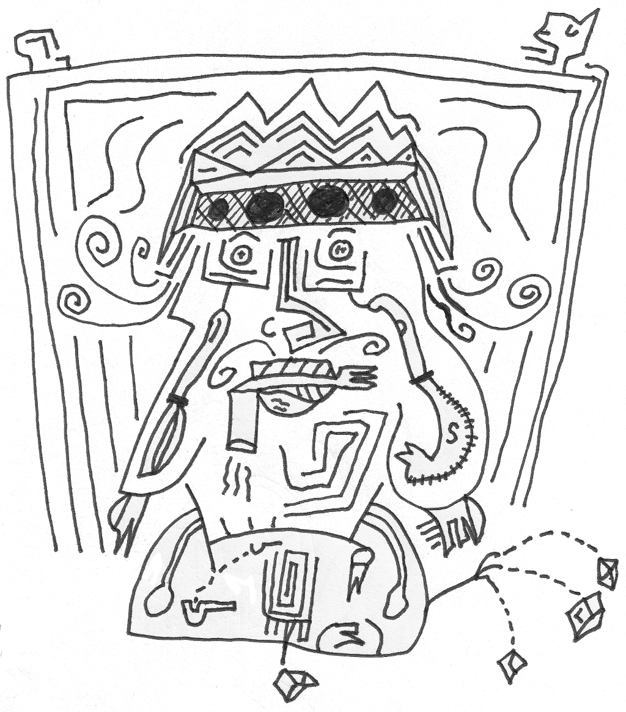
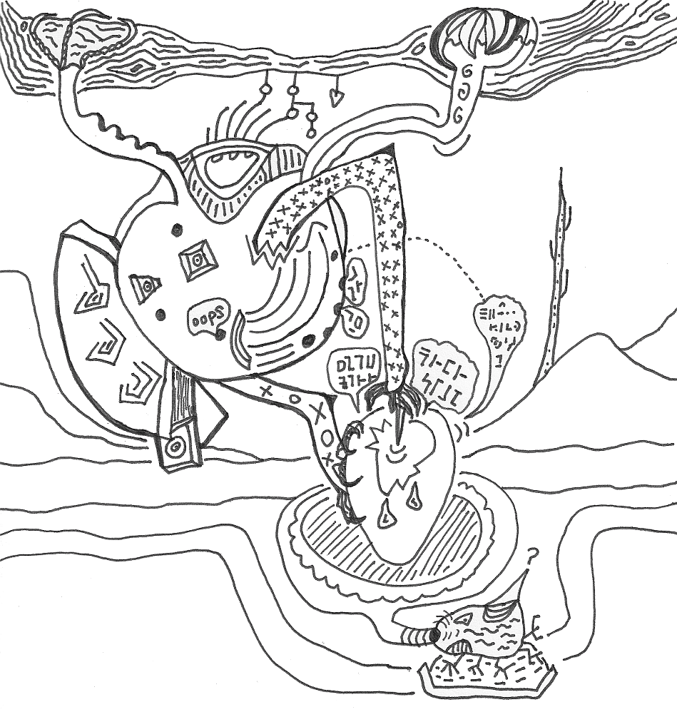
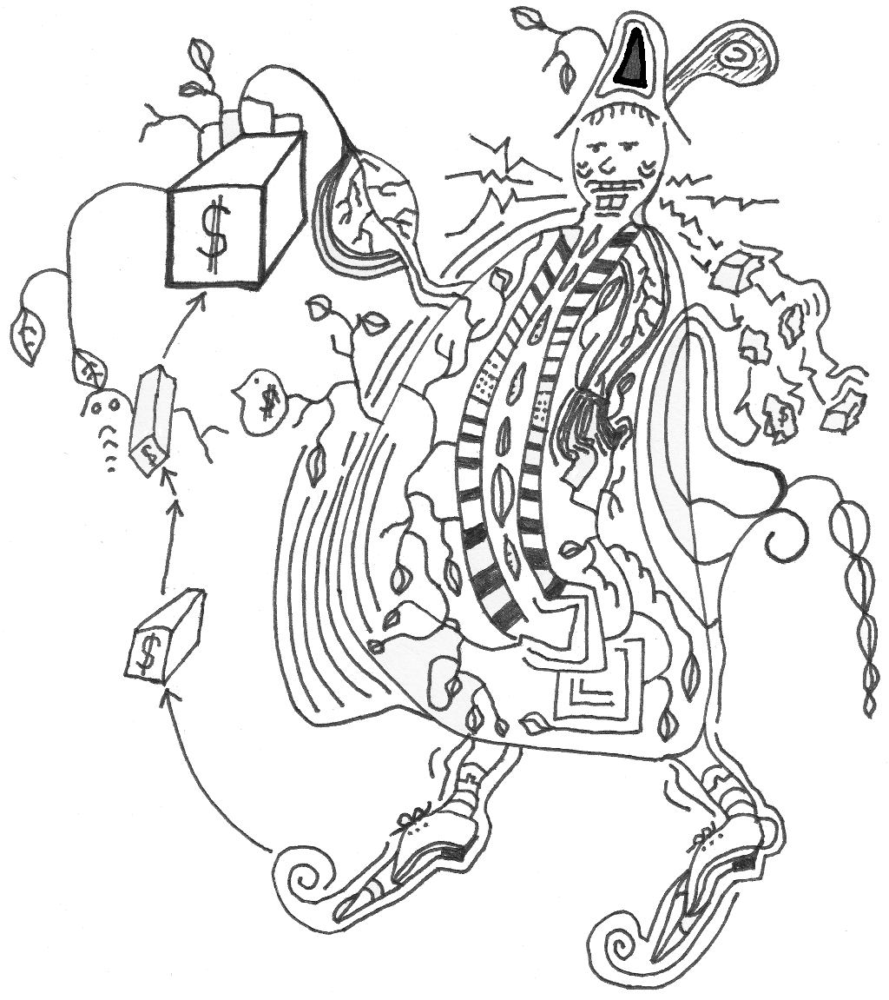
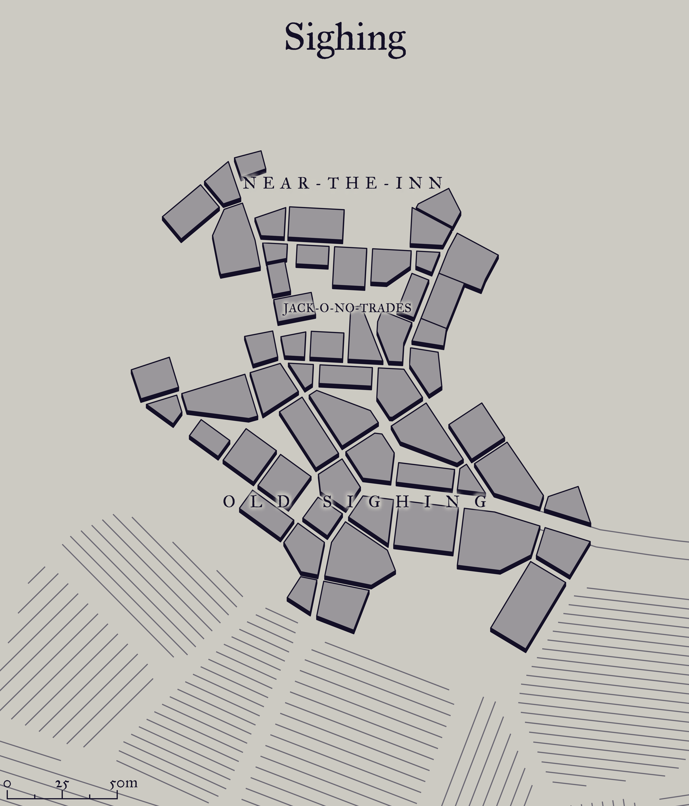
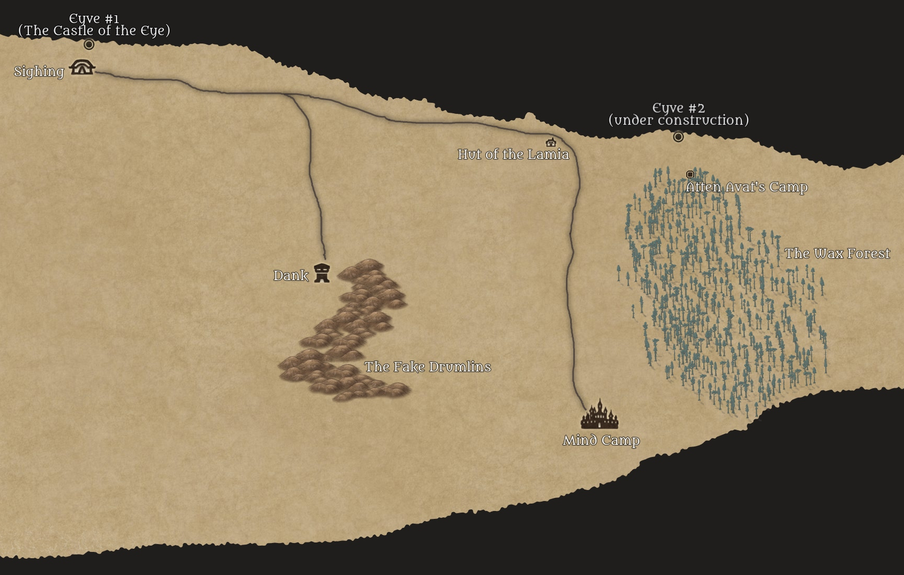

This is a setting and adventure designed for use with Troika!. I plan to expand the backgrounds over time, but decided to publish what I already have as an experiment. Enjoy!
Version: 0.0.7-20210610
All words and art by Elliot Smith, released under an Attribution-ShareAlike 4.0 International (CC BY-SA 4.0) Licence. You must include a relevant Troika! compatibility statement in any derivative works you make.
Legal text required for Troika! compatible products:
Zerocity Gazetteer is an independent production by Elliot Smith and is not affiliated with the Melsonian Arts Council.
This book was constructed using markdown, Python scripts and wkhtmltopdf.
The map of The Abyss was drawn with Inkarnate.
The map of Sighing was generated using the Medieval Fantasy City Generator.
The font for the body text is Averia Libre.
Published by Nada Holidays, your Number One choice for travelling the spheres.

Arguably The Country's most dynamic and thrilling industrial metropolis, Zerocity is also one of the most surprising. Each day, new buildings spawn in the ever-mutating landscape, nestling in a skyline of oblique palaces and historic buildings such as The Nest, The Brain Dawn Clock, and The White Cage.
Crumbling and desiccated it may be, but the city has style and survival instinct. Here, in 'the city that never breathes', you'll encounter so many dangerous and incomprehensible occurrences that you're likely to return with your life in tatters!
Photograph: a thin, fungi yellow tower whose pinnacle pierces a threatening cloud layer; the surface of the tower is decorated with mould, gargoyles, robot debris, and corpses.
Caption: The stunning Hag Acid Tower, visible from all points in Zerocity.
At the heart of the city, The Hub embraces the delicate architecture of the Fossil Zone, with its world-famous alien-built Pyramid. Inside The Pyramid there is a very real sense of impending danger. The central chamber is alive with a circus of unusual entertainers and supplicants, offering everything from disembowellings to platitudes.
From The Pyramid, countless picturesque skypaths lead into the central time dilation zone. Here, the world famous Alley Mass Generator has the unusual effect of slowing down the passage of time. Step into the field and watch your children grow old before your eyes! Or stroll the wide avenues, where light echoes of other travellers hang suspended in gravity wells.
Zerocity has a reputation as an ugly ghetto, but the reality is far from this distorted image. Surrounded by mellow hills, The Forest is a testament to the beauty of the city, and is home to the wonderfully ornate n-dimensional hypertrees. Over 100 metres tall, these miraculous extensions of other spheres into our own are a must see. The bole of each tree contains a space-time fragment that is an abstraction from one fragment of this sphere.
See the popular and hysterical Nail Universe, and your life will never be the same again!
Photograph: a large man with a deathly pale face, wearing a suit; an expression of blissful lust; sharp tusks curve from his belly, through the fabric of his shirt.
Caption: The colourful psychopolyvore, one of the inhabitants of The Forest of Hyper Boles. To be avoided at all costs.
Within a 10 minute stroll of The Citadel of Germs, yet still several miles from water, The Four Palaces are fine, modern structures overlooking The Mirror Valley. Obligatory meals apply at all times of the day.
The Palace of Seed is the most pleasant of The Four Palaces, with easy access to public executions and awe-inspiring art deco festivals. Fetishes are provided most weekends in the Paralysed Ballrooms.
Or experience The Palace of Gas, taking time to explore its bubbling sphincters and almost surreal gouts of flame. There are many sealed chambers, wire enclosures and an abundance of unnatural deaths in the surrounding area.
A visit to The Palace of Dolls takes you into one of the most nauseating atmospheres you are ever likely to encounter. This is a building with only three walls, the fourth side left open to the excrutiating Mirror Valley. Meet many doppelgangers of yourself, reflected by the mirrors and made flesh by insane multi-media robots. Visit The Xerox Chamber, and see your mutated copies being grown in pustular hormone beds.
For the senile traveller, The Palace of Neurons offers a wide range of services whilst retaining a friendly atmosphere. Local facilities include euthanasia booths, brain stripping, and mind conditioning. Worth a visit if only to enjoy a temporary feeling of mental instability.
Since being designated The Zone of Endless Creativity, The Folding City has undergone a dramatic refurbishment, with many of its historical components being replaced by fictional ones. But this is not a microcity without history! There is history everywhere, from the thriving Globe Theatre, through to the Colloseum and the Louvre. The Folding City is also temporary home to many phasing monuments, including the Golden Gate Bridge, Buckingham Palace and the Eiffel Tower.
All the major celebrities pass through this fracture in space-time, including Mickey Mouse and Ronald MacDonald, both particular favourites with the children. Try to see the pained expression of ex-American presidents as they struggle to break free of their squirmholes. The miraculous psychotropic atmosphere will revitalise even the most jaded occipital lobe, delightfully drawing characters from all times and places into this remarkable geometrodynamic matrix.
Photograph: Michel Foucault having a fight with Donald Duck; the Marquis de Sade looks on as he is chained to a bed by a leering Nicolas Nickleby; the Tower of Babel looms in the hazy background.
Caption: The pervert philosopher's dreams come true in the fabulous Folding City!
Located by the terrifying bulk of Terminal, the atmospheric Abyss is situated in acres of glass desert, 10 minutes by pubic transport to The Spine. The result is more bad than good, a mysterious lack of permanence exuding from the shimmering plains.
Skim over the glass desert in a flitter to arrive at the aching chasm of the Abyss itself. Peer into the bottom and see another Zerocity, every detail perfect. Then hire a powerful telescope and try to find yourself within the replica city, peering into a replica Abyss. At the bottom of each replica Abyss is another city, with its own Abyss, ad infinitum. Why not try to resolve the enigma of which city is real?
Built haphazardly on a foundation of skeletons, The Flesh Zone is a treat for the ghoul. Without question even more fascinating since the establishment of The Church of Pork, this delightful region is a fairy tale of bio-experimental labs, living machinery and grotesque monuments to meat.
Almost all the famous sites can be reached on foot, mainly by spinal conveyor belts: The Living Cranes, The Arc of Flesh, The Oedipus Complex. Take a lift to GENTEX Labs, order a new child with flippers, and enjoy panoramic views of The Spine as it winds its slimy way across the bone fields. Every meal is accompanied by the haunting chants of the Green Acolytes.
Peccadillos are also well catered for by The Fun Lab, where any distended configuration of human tissue can be grown on demand.
Not a castle in the traditional sense, this monumental folly serves no purpose whatsoever. It is a friendly, familiar architectural monstrosity, designed and built by idiots. Inside, the decor combines tawdry old world charm with modern distractions, encouraging the weary traveller to dissolve into the meaningless banality of manufacture.
Every visitor has a courtesy input socket fitted, enabling media drivel to be piped directly into the brain at all times. Other distortions of truth occur via the magnificient surround screens which pollute the castle. In the evening, dozens of superb but useless shiny objects trickle from spouts, giving a false promise of wealth. Watch the inhabitants of the castle, notoriously fond of defecating where they sit, unable to move due to their catatonic states. A frequent castle tour will do nothing to enlighten you.
Map: a huge symmetrical circle, divided into four by tremendous roads that radiate outwards from The Hub; a river and an artificial spine dominate the landscape; numerous labelled blocks show the positions of the locations described above.
The price of your short break to Zerocity includes:
We hope you choose to book your trip with Nada Holidays. Our flexibility in accommodating any ridiculous whim you might have makes for the break of a lifetime!
Whether for anaesthetising patients in the Flesh Zone or powering the Hag Acid Tower, Zerocity needs gas. You are one of the chancers who taps into this need, venturing Outside to find desirable gases, then channelling them to designated target locations via the monster-infested underworld.
Open air and gargantuan buildings Above terrify you. Fortunately, the Guild keeps you busy in the echoing smoky wetness Beneath. It is lonely down there, but a hat makes good company.

The gas filters in your nostrils make you immune to the effects of inhaled smoke or gas. These filters are only available to members of the Gas Channellers Guild. You can still drown in liquid.
Note: Gases do not affect entities without respiratory systems, such as simulacra, dolls, silicon entities, or certain gods.
Roll 1D6:
A plethora of other gases are available, so amend this table as you see fit.
Magic is the gift of 17 taciturn entities from beyond the spheres. They detest chatter: those who are profligate with words will never learn their secrets. During your years of listening in their baffling Pyramid, you quietly persuaded them to share their power. One succinct and hard-won spell, captured each day in 17 syllables, is now your gift to others.

Each day at dawn, you may compose a 17 syllable verse (a 5-7-5 haiku is suitable) to empower your single spell. This grants a +1 or +2 bonus to your skill with your Spell, depending on its poetic potency. You are able to cast your spell without such a verse, though it may displease the taciturn entities.
The Despotic Order of Sigilants lays claim to the depths of the Abyss. Their bright armoured skin facilitates diplomacy in the biege twilight therein: the brighter the armour, the grander the officer. While their silver flying thrones enable them to cross vast distances with ease, they can give rise to a certain lethargy of spirit, manifested as a coppery taint in the visage of waning Sigilants. Those who avoid ennui exchange sigils, employed in manipulation of weak-willed, sheep-like subjects.

The Saussure bird of the Hyper Bole forest is a biological weapon left behind by a forgotten war. Now that their natural enemies are dead, these creatures have become pests, preying on language-speaking creatures everywhere. They mostly absorb speech from the air, but have been known to extract language centres direct from the skulls of weaker animals. The grammatical spoils of this enterprise fill the word eggs which nourish the next generation of birds.
You are known to the Saussure birds as Violator. You have spent tiresome decades tracking and trapping these birds. You wield a vicious spear used to pierce word eggs; escaping speech is captured in your Grammaticon, to be sold on legal syntax markets or illegal slang ones. By now, you have heard enough speech to last a lifetime and are reticent to add to the noise, despite your proficiency with several languages.

You are a hedonistic photosynthetic priest sporting a magnificent viridian paunch. Your singular religious order, The Church of Pork, venerates consumption of everything, especially expensive manufactured goods: by such means is reality tamed. This feat is made possible by your intimidating mechanical jaw. As food grants you no nutritional benefit, you instead photosynthesise the light of dying suns through leafy appendages.

Consumption by mouth is purely devotional for members of your church and regarded as prayer: the more expensive things you consume, the holier you become. Consequently, your digestive system has been adapted to dissolve precious metals and gems, as well as plastics and wood. Instead of rations, you have the same number of small manufactured items (e.g. watches, camera obscura, compasses, cutlery), intended for consumption but providing no nutritional benefit.
You may eat normal food, though you don't require it. Instead, you subsist on sunlight. You need to sit in the sun to heal (rather than sleep), regaining 1d6 Stamina for each 4 hours of sunlight you absorb.
Once per day, if you consume stuff worth at least 5 silver pence and successfully test Gluttony, your devotion is recognised by the Lord of Pork and you are granted a boon (roll 1d6):
An adventure for Troika!, set in The Abyss.
Some parts of this adventure are marked as bold blocks. These are addressed directly to the PCs and can be read out verbatim without giving away any secrets.
Other parts, you can paraphrase or ignore as you see fit.
Through misfortune, your golden barge has crashed in the Abyss, at the base of its kilometres-deep obsidian cliffs. You were travelling together to the same destination, Luton, a suburb of Zerocity. The barge pilot, Drago, is very annoyed as he was due to go on holiday when his shift ended. He informs you that the barge will need to be repaired before it is fit to fly again; the parts required are a gyro adjuster, rubber sphincter, ball bearings and a Mark II plasmic core.
Outside the barge, the atmosphere is dense, hot and humid. There is a sickly scent of honey and over-ripe bananas. Underfoot, cracked grey earth. The sky is a thin brown line 10km overhead, pinched between overbearing cliffs. Low brown clouds rumble ominously and crackle with lightning. Suddenly, the clouds burst, showering you with brown sleet. You hear faint, distant whistling.
Nearby, at the base of the cliffs, is the village of Sighing. There is a map of it on a nearby noticeboard. The village is a cluster of a few dozen metal shipping containers serving as houses.

On entering the village:
The grey-skinned, stooped villagers seem to look through you. Their eyes are dull and glazed.
If roused from their drug-induced stupor, they are generally xenophobic and idiotic. They scrape a living here, tending spiralling blue-green grasses which yield grey pseudo-bananas with mildly narcotic side effects. These and other pseudo-banana species (the purple carrying the highest dose of sedatives) are the staple diet throughout the Abyss.
The clouds part, revealing the most remarkable feature of Sighing: 1km up the cliff is a structure made of glass cubes, arranged into the shape of an eye, about 300 metres across. The outer ring of cubes is opaque, uncoloured glass; inside that is another ring of amber-coloured cubes; inside that, a ring of blue cubes; then a final circle in the centre, made up of dark grey cubes. Each cube is about 10m on a side (some smaller, some larger). The cubes are joined by a maze of clear glass walkways with see-through floors.
The map explains that this is the Castle of the Eye, owned and inhabited by Sigilant Gruber (see below).
The village has a barren dusty shop, Useless Barry's Shop; and a clapboard inn, The Tired Cliché.
On investigation, it soon becomes clear that Useless Barry's Shop has none of the equipment required to repair the barge. Or at least, Barry can't find it and doesn't seem to want any customers. He takes forever to find anything.
He has a variety of dusty items for sale, including dark heavy beer, a side of cured pork hanging from a hook, moth-eaten blankets and towels, dry rations, simple weapons, and gloves. Barry is oblivious of people stealing his stock.
The innkeeper of The Tired Cliché is Arriente. The most interesting thing about her is her name. She speaks in a clichéd way:
"I got this job through a relative. Like they say, it's not what you know, it's who you know."
"Only time will tell if I can make a go of it. It's not looking hopeful at the moment. I'm not having the time of my life."
"Cat got your tongue?"
"Someone woke up on the wrong side of the bed!"
Arriente's daughter, Pam, helps out around the inn. She is the spitting image of her mum.
Arriente knows that the Sigilant has lived here for centuries: "He is as old as the hills." According to her, he hasn't left his castle for at least 5 years. He rarely intervenes except to insist that a festival is held in his honour, make judgements over the very few crimes committed in town, or ritually humiliate someone for his entertainment. All communication is carried out via a comms unit in the elevator.
If the PCs want to buy a drink, Arriente offers a variety of cocktails, all of which taste of banana; tea made from the pseudo-banana grasses and stems, which tastes of bananas plus hay; and a strong dark cloudy beer possibly made of insects.
There is one out-of-place inhabitant who will help the PCs: a brightly-coloured jester of a man called Torrington Torponales, "Call me Torry!", who is full of enthusiasm, hope and japes. He is one of the few people in Sighing who doesn't eat the bananas, instead living on imported Hymenopteran Brand crackers (no salt) from Dank.
"You look like fun! Look lively!" he says, swiping a PC with a balloon on a stick.
No one in the village likes him as he is very annoying. The other villagers throw stones at him while he's talking to the PCs.
He will divulge that the PCs' best chance would be to consult the Sigilant, who lives, all-knowing, in the Eye Castle. Other alternatives could be sought elsewhere: perhaps the town of Dank, populated by hymenopteran traders, "Though they are feckless and chittering..."; or Mind Camp, whose dreaming inhabitants may help in exchange for precious memories, though that could take decades. "My mum never did come back...That's not a quest by the way, we're 99% sure she's dead."
As an aside, he says: "If you go by road, watch out for the lamia who lives in a ruined hut somewhere along it."
The Sigilant mentioned around town is Sigilant Gruber, inhabitant of the Castle of the Eye and dictator of Sighing. He has ruled as long as anyone can remember. Villagers are rarely invited to his castle, and the Sigilant never leaves. Access is via a glass elevator at the base of the cliff. A notice outside reads:
"Enter the elevator and state your purpose succinctly. Audiences granted only to those who will benefit the Sigilant."
The Sigilant would not normally agree to help outsiders. On this occasion, though, he has a matter of his own with which he requires assistance. The torpor of the villagers, brought on by the narcotic fruit, means he cannot entrust it to them. Thus, he will seize on the idea of meeting needy strangers and granting them access to his castle, in the hope that they will prove his salvation.
The enclosed glass elevator travels with terrifying speed at the airlock in the base of the castle. Exiting the airlock takes the PCs into the castle's first opaque cube.
You are greeted by an androgynous butler dressed in plain black clothes with white collar and cuffs with slightly artificial skin: too shiny and almost transparent. Their feet are enormous and plate-like; their hands are also too large and plate-like with stubby fingers; their face is too symmetrical.
Jeevz leads you through the outer ring of cubes to a glass walkway. It provides vertigo-inducing vistas onto the village below. Now you're up here, you get a close look at the amber-coloured cubes: each is almost full of a thick, honey-like liquid and has a set of pipes feeding into it.
Jeevz leads you through a series of cuboid rooms full of soupy, sepia light. The walls are inscribed with multitudinous obscure symbols etched into the glass: letters from unfamiliar alphabets, mystical sigils, runes, random scribbles.
Each cube is lined with sculptures, paintings, and pedestals displaying curious oddities collected over the last few centuries, e.g.
A rectangular grey box on a shelf. It has a green button about half-way down, a slot at the bottom, and the text "WHAT YOU WANT" near the top above a stylised picture of an eye. Pressing the button causes an item to expand out of the slot with a pop, e.g.
A painting of a deserted town square, the home of one of the PCs. Surrounded on three sides by stark white buildings, leaning at vertiginous angles. When viewed, the perspective changes, as if in three dimensions. A single leaf patterned with an eye blows across some flagstones. If a character tries putting their hand into the painting, it is like putting it out of a window: they feel a cool breeze blowing over their skin, a few spots of rain. If they watch for a few minutes, the flagstones become wet as it starts to rain in the picture. No object larger than an arm can enter; an object can't travel in more than 50cm; it's not possible to throw objects in (they have to remain attached to something); and putting your face in doesn't work (the painting's surface acts like a forcefield).
A smooth silver disk mounted on a pedestal. When someone passes, it mimics the face of that person. If two or more people stand in front of it, it forms a combination of their features. If spoken to, the mask replies with gibberish approximating the words spoken to it. Jeevz points out that it used to reply sensibly, but broke a few centuries ago.
An enormous bag of oddly-shaped objects which look like sweets. None of them taste like anything the PCs have tasted before, most are disgusting, and some are the most delicious things they've ever experienced.
The Sigilant also has a range of more exotic and dangerous items, but these are elsewhere, carefully isolated from each other to prevent accidents.
Finally, you reach the Sigilant's "throne room", in another of the blue cubes. The Sigilant himself floats towards you just above the floor on a silver anti-gravity throne adorned with bird-like heads. He is enormous. His skin is silver-plated, worn down in places to copper, stretched tight over a large round face. He is dressed in gaudy, flowing robes studded with cutlery, and a fez made of black metal. His teeth are made of gold.
In one hand he has a goblet of a sickly-sweet smelling, gooey liquid.
SIGILANT GRUBER (explorer/trader/despot) Skill 6, Stamina 20, Initiative 2, Armour 1 Cowardly, refuses to fight
The Sigilant welcomes the PCs. (He is actually hundreds of years old, as the nectar is an anti-ageing drug. This is why he is desperate to keep up his supply. But he won't reveal this.)
"Welcome, my friends. I trust you have been treated well? A drink perhaps?"
The PCs will not be given the nectar, but Jeevz will offer them a tray of delectable but sickly, sludgy drinks.
The Sigilant then explains his problem:
"So...to my problem. This is my favourite drink, nectar." He holds out the goblet. "I have nearly run out of it. My little humming birds used to bring it to me; but now, they have stopped, and my supplies are low. I need you to find out where my little birds have gone. And, if you can, make them come back to me. I will reward you with the parts you need if you succeed."
The centre of the castle, which the Sigilant has never managed to visit (it is shut off behind impenetrable and virtually indestructible doors), is actually the remains of a gigantic brain of an Eyve, an immensely intelligent cybernetic organism; the cubes the Sigilant and the jeevz are living in are its body, which operates like a "hive".
The nectar provided by the birds was originally intended to feed this brain, but was diverted by the Sigilant and his associates centuries ago, filling up the glass cubes instead. The Eyve was starved of nourishment and died. In turn, this reset the jeevz, which then imprinted on the Sigilant (see the section on the jeevz).
Recently, another Eyve in a different part of the world began a programme to communicate with other Eyves on the planet. Finding that the Eyve at Sighing had died, it started a project to construct a replacement. To this end, it remotely reprogrammed the giselts and barbola-veru (aka the humming birds) at Sighing, setting them to work on building the new Eyve a few kilometres away. This is why the humming birds disappeared from the Eyve at Sighing.
Note that the jeevz were once capable of accessing the Eyve's brain, but forgot how to do this when it died.
The glass-like material used to create the Eyve is created by giselts from the leaves of genetically-engineered trees which look like they are made of wax (hence, The Wax Forest, see below).
The Eyves and their ecosystems have some ineffable purpose.
If the PCs decide to take the mission:
The Sigilant leads you through a few more rooms into his "hangar". This room is a glass box like the others, but the ceiling shimmers and ripples like a soap bubble. The Sigilant explains, "It's a forcefield, to keep the air in".
The room contains 4 aircraft: one resembling a single large butterfly wing, one that looks like a random pile of metal poles, one like a goblet made of pearl, and the last a shifting mass of square panels of light which look like stained glass. The Sigilant tells you that this last one is called Cupid. He is going to let you "borrow her" to complete your mission.
Cupid looks different to each person that sees it: initially, it appears to an onlooker as shifting panels of stained glass; but as it is observed, its form appears to transform into that of a familiar flying machine known to the observer.
The vehicle can comfortably hold 10 people (its dimensions always remain within a 10m cube).
Cupid is a transport vehicle designed to take Eyve parts between sites and/or seed new Eyves. It arrived recently, to investigate moving any remaining jeevz from this dead Eyve to the one under construction; at this point, the Sigilant got the jeevz to restrain and capture it. He soon realised that it was trying to return somewhere, and that it has something to do with the jeevz and the humming birds. He is using the PCs as an experiment, in the hope that they will be taken to where "his" humming birds are.
Cupid is capable of speech, but can only be heard by someone mounted on it. Its female voice seems to echo all around (though she is actually speaking to the person through their mind). Originally, the speech was intended to reprogram jeevz travelling inside it, ready for a new assignment at a new Eyve. To a human travelling inside it, the speech is rather cryptic.

When you climb onto Cupid, you feel a sudden chill, and a wrenching sensation, as if your stomach is being pulled up towards your throat. The Sigilant keeps smiling at you, though he looks nervous.
Once everyone has boarded, the Sigilant presses a button. The craft shifts, rocks and settles, as if it had been freed from invisible chains. Then it lifts off, floating up to the ceiling. A gentle female voice echoes around the cabin:
"Parameters reset ready for reprogramming to commence in 5...4...3...2..1." Then a stream of deafening gibberish begins. Through the babble, the Sigilant shouts: "Do not worry, my friends! I have heard it before. It is nothing to be afraid of!"
The craft lifts up, through the ceiling membrane. The voice continues: "Veru and tectons are operational at the new site. Barbola work will commence shortly."
Cupid powers up to incredible speed in an instant to fly about half a kilometre above the surface. It follows the obsidian cliff, which continues in a huge arc for several kilometres.
If the PCs try to take control of Cupid: Only a skilled pilot would stand a chance of understanding the controls. Others may fiddle with them and affect how Cupid handles, but the machine will quickly right itself if thrown off course. Though a concerted effort at mischief may enable a PC to deliberately crash the machine.
If Cupid crashes, its inertial dampeners prevent passengers receiving too much damage, but each passenger still takes 1d6 stamina loss. Afterwards, Cupid no longer makes any sense when spoken to or mounted. The mirage of isolation is gone, and it just appears as a large, shell-like, slightly pink container, 10m long. Anyone paying attention will see a series of letters across its dashboard which state "UNDER REPAIR". Over the next few hours, it will repair itself, ready to return to the Sigilant when the PCs are done at the crash site.
The PCs have the opportunity to explore the inside of Cupid during the flight. Cupid carries a number of Organo Capture Cubes (see below) equal to the number of passengers. They are in hatches on the inside of the passenger compartment. The artifacts need some investigation to figure out their purpose, which is to capture small animals up to the size of a human:
Organo Capture Cube
A grey cuboid device, about 30cm on a side, which feels slightly warm to the touch. It has geometric patterns across its surface; one surface has a large eye shape on it. There are two indentations on one face; on the opposite face is a thin black slot, big enough for a penny to fit into, but not much else.
The device is activated by tracing the eye pattern. When thumbs are put into two indentations and twisted, an organic object up to about human size within 5m of the slot is held in a field of amber light, unable to move unless it breaks the field (test Skill or Luck). If the creature doesn't break the field, it is pulled into the interior of the cube. To release, the thumbs must be moved in the opposite direction, at which point the organic material reforms in an amber pool of light, spilling out of the slot.
If the PCs make a connection between this artifact and the "WHAT YOU WANT" machine in the Sigilant's Castle of the Eye, improve their chances of understanding its purpose. They were manufactured by the same entity.
Anyone pulled into a cube can only be released by someone else: there is no way out for a captive without assistance. The captive ends up in a milky-white limbo space, suspended in mid air but still awake; they can only move their eyes, and appear to have stopped breathing; if left inside for any length of time, they won't feel hunger or need to sleep; eventually, being in this state drives a captive insane.
These random encounters can be interjected during the journey to spice it up:
A sun beast called Sir Lexington. He appears as a golden-lit, lion-headed humanoid wearing dark glasses and a suit; his skin glows around and through the suit. This poor fellow is lost after falling down the Abyss; he's originally an inhabitant of a place called Gotobed. He doesn't seem too bothered about being lost, but would like to leave. He is pretty laid back and uses the phrase "I'm shakin' it 'til I'm bakin' it!" or "Shake it 'til you bake it!", though he's not sure why or what it means. He's been to Dank but didn't like it: "Too hot! Those dudes are so cross, man!". He has met the lamia and barely escaped with his life, having a scar on his arm where she nicked him and tried to drink his blood. He's not aggressive. He doesn't have anything to trade and has very few possessions (a couple of rations, a shortsword). If the PCs help him find his way out, or offer him a lift, he will become a firm friend and may be useful as a contact later on.
The hut of Mrs. Rumbelow. Mrs. Rumbelow is a tired lamia that wants to die but can't help fighting back. She lives in a ruined barn to the side of the road, weak through lack of food, slumped in a fetid corner. She whispers to anyone passing by to "Come in, come in, help me, please, gentle traveller; I have riches and food I will share". For ages, she has had to subsist on hymenopteran traders, "the taste of which I can't abide". She is suicidal by this point: "I can't help feeling I'd be better off dead. Would you gentlemen be willing to humour me and put me death? I can't promise I won't fight back, as survival instinct is wont to kick in at the worst of times. And I long to carve the flesh from your broken bones and feast on it. But as far as possible, I will hold back." She has the top half of a languid woman, cascades of red hair, feathered torso, and the bottom half of a bird of prey (she struts like a chicken). She is carrying two daggers in her belt. If killed, her grimoire may be taken, which can be used to learn the spell Affix with an appropriate Skill roll and one week of study. She has 3d6 silver pennies, a ragged old tiger soft toy and basic household goods, but she lied about the riches.
MRS. RUMBELOW, SUICIDAL LAMIA Skill 8, Stamina 15, Initiative 3, Armour 1 Attacks: Knife or Claws (as Moderate Beast) Special: Knows the spells *Affix*, which she uses to hold enemies in place if she is losing a fight; and *Amity*, which she uses to stop enemies from attacking her before walking up and clawing them Mien: Wants to die
Cupid follows the arc of the wall for perhaps 20 kilometres. Ahead, a massive red wall juts out of the obsidian cliff, stretching 2km up into the sky, extending across the floor and enclosing a section of the northern cliff. On closer inspection, it appears to be made of fire.
Opposite, at the base of the southern cliff, is the Wax Forest.
Cupid speaks again: "I know the way. Jeevz returning home. Prepare for your duties."
This energy wall is known as The Firewall. (The people of Sighing are aware of this, but won't offer this information unless asked.) Its purpose is to protect the second Eyve (a partially-constructed mirror of the Castle of the Eye) from predators. The wall was originally programmed to let cupids through, but the malfunction means that it will treat Cupid as hostile.
Note: The original Eyve at Sighing never had a Firewall. This one has been here for centuries, and the second Eyve has merely adapted to make use of it.
PCs may notices that the wall is glitching; the part that Cupid is heading for is particularly erratic and dangerous-looking. The glitch manifests as polygonal sections of the wall (triangles, oblongs, rhomboids) disappearing, then reappearing with a flash at an odd angle to the rest of the wall surface, often with their dimensions changing (longer, fatter). This causes parts of the wall to strike the ground, where they leave behind long scorched grooves.
The PCs can attempt to influence Cupid to prevent her from flying into the wall, try to take control of the craft, try to help her go through the glitches etc.
If the PCs try to discern a pattern to the glitches, keen observation reveals that the glitches follow a pattern: there are three short bursts, then a pause of 30 seconds, then 2 longer bursts, then a pause for a minute, then back to the start of the cycle.
If the PCs fly into the wall: It appears to be two dimensional: as you pass through it, it appears to have no depth (it does, but it is so thin human eyes can't detect it).
If Cupid is caught by the wall:
Electricity makes your hair stand on end. A searing red beam arcs across the vehicle. Smoke and a viscous blue liquid pour from the wound. It leans to one side, makes a high-pitched drumming noise, and plummets into the ground with a booming thud, skids across the surface, crumples into the foot of the cliff, and comes to a stop, hissing and steaming.
See the section Travelling in Cupid for details about damage sustained, repair etc.
Around the Firewall live Ash Scavengers, creatures adapted to this unpredictable environment.
Several reptilian creatures seemingly appear out of nowhere. They are 2m long, squat, with long toothy snouts, padding around on four legs. Each leg ends in large, scoop-like, clawed hands. The creatures paw the ground around the scorch marks and sniff the air.
The glitch in The Firewall has been happening for possibly millions of years; so long, in fact, that these creatures have evolved to capitalise on it. They appear seemingly out of nowhere at points on the arcs burned by the firewall, just after it glitches. Their goal is to scavenge any creature unfortunate enough to have been caught in the fire.
The number of Ash Scavengers should equal the number of party members. If the fight turns out to be too easy, have some more glitch in.
The Firewall will still glitch during combat, sending a sheet of flame through the combat on a roll of 1-2 on 1d6 each turn. One random PC or Ash Scavenger (if engaged with a PC or not moving) has to Test their Luck or take 4 damage.
ASH SCAVENGERS Skill 5, Stamina 8, Initiative 2, Armour 1 Attacks: Large, relatively-weak, scooped claws (as Modest Beast) Special: Able to blink themselves in and out of this sphere, an adaptation they have evolved to allow them to dodge The Firewall's glitches. This also makes them difficult to fight, as they are preternaturally alert and fast. They will retreat on losing half their number. If anyone manages to hold onto an Ash Scavenger when it blinks out, they are taken to the Blood Desert, a vast featureless expanse of cracked red clay, stretching to the horizon in all directions; the air is sulphurous and smells of burning paper; it is difficult to breathe, and clings unpleasantly to throat and nostrils. The sky crackles with fire. If the Ash Scavenger realises it has a passenger, it will immediately return to the Abyss, hopefully still carrying its passenger; if the interloper manages to dismount in the Blood Desert, the Ash Scavengers will try to bring them back to the Abyss. Mien: Scavenge burned creatures, eat charred meat Description: Ash Scavengers are animals which only live in this one part of the Abyss. They have evolved over millions of years from a local population of laminated wolves, adapting to the unpredictable conditions near the broken Firewall. They have evolved so far, in fact, that they have become a separate species: they are smaller and faster, and have lost the laminated wolf's ability to grapple while gaining a defensive "blink" ability (see above). They tend to operate in packs of 5-10 individuals. Ash Scavengers are intelligent enough to reason with, and usually speak a corrupted, simplistic version of the common tongue. They can often be bought off with food and shiny trinkets.
On the edge of the patch of burnt scrubland is The Wax Forest. It is a densely-wooded area of unusual trees, growing up to about 10m tall. Each large, floppy, greyish leaf is about the size of a plate, hanging in large clusters from black branches. The leaves glisten with sticky fluid.
A group of three tall pale grey creatures emerges gracefully from the forest. They are about 10m tall, with long, slender legs and necks. They each have the same beautiful, familiar humanoid face, like Jeevz, but topped with extravagant antlers, seemingly made of steel. They are completely silent. As you watch, you start to feel relaxed and happy, almost as if meeting an old friend.
(This is the mind effect of the giselts, which prevents anyone from holding bad intentions towards them.)
The creatures start to feed on the leaves of the trees. As they do so, smaller, humming-bird-like creatures with rainbow wings land on their necks. The humming birds fly away from the giraffe creatures, glittering in the sun like fragments of stained glass. They seem to be flying up to a structure on the nearby cliff.
This structure looks very similar to the Sigilant's castle: it has roughly the same eye shape, but only seems to be half-finished. You can make out dozens of human-sized, dark figures clustered around the castle. They are moving slowly across the cliff, but it's not obvious what they're doing. The birds seem to be landing on the cubes and on these figures, then flying back down to the giraffe-like creatures again. This cycle continues over and over.
There is another creature on the outskirts of the forest. Or perhaps a man, or something like a man. It moves carefully within a few metres of the giraffe creatures. He seems to be recording their behaviour on an instrument with a large lens in the front of it.
The man is about 50 years old, grizzled looking, with long white hair and a thick beard. He is dressed in practical combat fatigues and light armour; his belt pouch contains a range of knives, compasses, short metal tubes and cannisters; on his back he is carrying a long metal tube with barbs sticking out of the sides of it.
When approached, he appears pre-occupied. He alternates between intently staring at the PCs with off-putting black eyes, and gazing back into the forest. He talks in a curiosly monotonous way.
The "man" doing the recording is Atten Avat (or, rather, was Atten Avat). Atten was a naturalist who came to this area to study the Eyve ecosystem. While in the area, he encountered a creature he nick-named a "Living Prison". This is a parasite which mimics local wildlife (and people) to take advantage of them. The giselts' psychic defences usually prevent them from being harmed; but the Living Prison can nullify their defences, and has "enslaved" a large proportion of the giselts and other parts of the local Eyve's ecosystem.
While Atten was recording its behaviour, he became its next victim. The Living Prison made a copy of him, used it to pique his curiosity, and lured Atten to its tendrils to be digested. The copy lives on, redundant, mimicking his behaviour while he was alive, but without any of his memories.
When the PCs spot this mimic recording the giselts, the astute among them may notice that the device he's holding is switched off. When questioned about it, he won't be able to explain what the device is or what it's meant to do. His conversation is restricted to:
(all sentences which Atten spoke when confronted by his mimic; the mimic won't speak them in this order, but will mix them up; the most vital sentences, which give most away about the real situation, are towards the end of the above list)
His clothes and items are actually part of his body, and can't be removed. Similarly, the object with a lens is melded to his hand: he can't let go of it or pass it to the PCs.
He will loiter around the PCs long enough to determine whether they are dangerous, to "record" their shapes and behaviour, before attempting to get away silently. His aim is to retreat to his central torso and create mimics of the PCs which can be used to lure and capture them. If they follow him, he will try to lead them close enough to the Living Prison's central torso to be captured by its tendrils.
Nearby, just at the edge of the forest, is the remains of Atten's camp, which have been largely ignored by the Living Prison. If the PCs search here, they will find his notebooks about his encounters with the Eyve and the Living Prison.
The dates on the entries indicate that Atten has been here for several months. There are pages and pages of scientific notes, but the more general descriptions of first meeting the creatures are of most interest:
"This enormous creature is as incredible as I'd heard. It lives attached to the glass cliff, and is composed of cubes of a semi-organic material. I have christened it the 'Eyve'. It operates almost like a hive for a unique ecosystem of creatures. At the bottom of the food chain are the Wax Trees. The giraffe-like creatures, which I call 'giselts', feed on these trees, converting their oils to a type of nectar. This nectar is excreted into cavities along their necks. Next, humming-bird-like creatures gather this nectar and deliver it to the Eyve. I must find a way to visit the structure and the mysterious figures gathered around and inside it."
"Using the sky ladder, I have been able to ascend the glass cliff and reach the structure. There, I was able to observe the cliff creatures more closely. They resemble large beetles and appear to be constructing the cubes. The small birds deposit nectar into chambers on their backs, which I presume nourishes them and provides the building materials."
"I also hypothesise that the cubes of the Eyve are living chambers for creatures I have christened 'jeevz'. The jeevz resemble beautiful women, but strangely all have the same face as the giselts. These creatures eyed me with suspicion on my arrival, and effected a most extraordinary transformation: their heads metamorphosed into what I assume were weapons, shaped like enormous eyes. They were intelligent, though, and I was able to placate them somewhat before being attacked. But they remained guarded, explaining I would be eliminated if I interfered with the 'veru' or 'tectons'. By their gestures, I understood the 'veru' to be the birds, and the 'tectons' the beetles. I will return later to study them in more detail."
Towards the end of the entries, the tone of the journal changes, becoming paranoid:
"There are other creatures in the forest with me. Not the reptilian Ash Scavengers, with whom I maintain an uneasy peace. This is something I haven't encountered before. I hear the verus squawking at night; the other animals of the forest also seem nervous. I will be vigilant."
"They were there at the edge of the camp last night: I could see them moving around in the undergrowth. I waved my firestick and they retreated. But they are biding their time. It is getting too dangerous to stay here. I must leave in the morning."
The journal ends.
The PCs may realise Atten is dead and has been replaced by a mimic.
On searching the camp, the PCs may find his sky ladder artifact, along with several oxygen masks and a map of the local area (see ???the_abyss.jpg). He also has a 2 flatteners, which could be used to defeat the Living Prison and/or the Eyve. There are numerous other bits and pieces, including single-use firesticks, lab apparatus, photographs of the creatures in the ecosystem, rations etc.
Sky ladder: A grey box 1 x 1 x 0.5m in size. When activated, a ladder of pure energy emerges from the top and extends vertically into the sky. It can be stopped at any desired height. The maximum height it can reach is 2km (note that humans can breathe with minor effort at this height, even though the air is thinner). Seemingly any number of humanoids can grab the ladder as it extends and be carried up with it. Note that the ladder only extends vertically, so the box has to be positioned almost underneath the point you're trying to reach. It also appears to have its own stabilisers, so it isn't affected by even the strongest wind or physical force.
Oxygen masks: A clear plastic mouth and nose guard which clips onto the face and adheres to the skin. This provides an indefinite supply of oxygen to its wearer. A mask may malfunction and stop producing the same volume of oxygen, causing its wearer to pant for 5 minutes if outside of an atmosphere; after 5 minutes, the oxygen stops altogether.
Flattener: A flat silver disc with a stylised picture of a hammer on the front. This is a placed bomb weapon. 1 minute after activation, it destroys all the organic matter around it in a 1km radius sphere, in an unassuming blur of off-white light (damage as Gigantic Beast x 2); however, it will not affect anyone who touched it within the last 28 hours.
If the PCs spend a night, they wake up the next day and hear noises outside their tents. As they exit, they come face to face with replicas of themselves: the mimic has hatched copies of them and sent them to the camp to lure them back to its tendrils.
The copies will initially wait on the edge of the camp. They won't try to attack, but may repeat phrases that the Atten mimic heard them say the previous day. If the PCs approach, the mimics will retreat further into the forest. Their aim is to draw the PCs towards the tendrils of the Living Prison, deeper in the forest.
As you proceed into the forest, the trees change. Their trunks are encased in red, ropy vines and the branches droop feebly to the ground; the colour of the leaves is a paler, almost transparent grey. The scent becomes heavier and more foetid.
At the centre of the corrupted grove is a vast network of intertwined vines. They are arranged into a dome like a mesh cage; within the dome are a number of wax trees with giraffe-like creatures grazing on them. At the centre of this herd is a large fleshy hump. Cubes like those of the Sigilant's Castle of the Eye are spotted over the hump, and are being visited by a large flock of humming birds.
The Living Prison is a parasite which has imprisoned several wax trees, giselts and verus in enormous fleshy cages. The verus are milking the giselts, but can't reach an Eyve; the Living Prison has copied the cubes and feeding pipes of the Eyve (red, wet, flower-like openings), and the verus have been tricked into feeding it instead.
The PCs should be discouraged from attacking the Living Prison directly, as it may prove too strong for them. They may be better off attempting to use a Flattener to deal with it.
LIVING PRISON Skill 10, Stamina 30, Initiative 3, Armour 2 Attacks: Grappling tendrils (see below); Wicked teeth (can only reach grappled opponents, as Large Beast) Special: The Living Prison lashes out with writhing, razor-edged tendrils which attempt to grapple attackers. This is carried out as a normal attack except that it holds the attacker in place rather than causing damage. A grappled entity can only perform purely mental actions or attempt to free itself (vs. Strength test). After failing to break the grapple, the Living Prison will attack its prey with one of its many mouths, arranged across its central torso, on the next turn. Mien: Copy, consume Description: The Living Prison consists of a central torso, like a large red hump, festooned with a multitude of 30m long tendrils, like red ropes. Its mouths are located around the base of the hump and resemble large, lipless slits. It is specific to the wax forests around Eyves, and has either evolved or was developed to take advantage of the Eyve ecosystem. It can also mimic other creatures after sensing them for several minutes; growing a new clone of a creature takes approximately 8 hours. Each clone is equivalent in combat prowess to a goblin carrying a sword.
The PCs can visit the Eyve on the cliff, either by repairing Cupid or using the sky ladder.
The new Eyve is almost operational. The tectons are still building it, and the first jeevz have been moved in to protect it.
PCs approaching the Eyve will be treated with suspicion. They can enter the outer chambers where the jeevz are dwelling. The jeevz will confront the PCs en masse and speak as one.
The Eyve is aware that its ecosystem is being disrupted by the Living Prison. It may be persuaded that it should allow the PCs to help it deal with this threat; however, it has no way of rewarding the PCs.
If attacked, the jeevz will convert to their defence form and defend the Eyve. There is one jeevz for each PC.
JEEVZ Skill 7, Stamina 10, Initiative 2, Armour 1 Attacks: Ranged laser eye attack (as pistolet); Bare hands (as Modest Beast) Mien: Protect the Eyve
The reward is to provide necessary gear and parts to repair the PCs' golden barge. After this is done, Drago (the pilot) can fix the barge in a matter of minutes and continue the journey to Luton.
There are other places in the Abyss within a few kilometres of Sighing. Dank is a 2.5 hour walk from Sighing; Mind Camp 6 hours (following the road).
If the PCs travel in Cupid, it will avoid both of these towns, because they are frankly hazardous. However, the PCs may decide they offer better hope of providing the parts they need, or they might just be perverse, and end up in them anyway.
A series of spindly, yellow towers pierce the biege fog like fingers through school toilet tissue paper. The towers are encrusted with an ochre mould. On the surface of each clamber shiny black fly-like wingless insectoids, suckling on the mould.
In the narrow, crowded streets, the air is even thicker and more cloying than outside town. The drains run with an acrid viscous yellow liquid which smells of formaldehyde which makes your eyes sting. Hundreds of the insectoids are engaged in mindless exchanges, barging, pulling, cajoling. A heated exchange in front of you ends with one of the creatures biting the head off the other, leaving an oozing, stinking stump behind.
The town is populated by feckless, chittering hymenopteran traders. They are extraordinarily impatient, easily upset, particularly with those unable to speak their trade cant, and become increasingly agitated and hyperactive. However, they do have the parts required to fix the golden barge, at a cost of around 1d6*10 silver pence. Double or triple this price if the buyers take to long to make a decision.
HYMENOPTERAN TRADER Skill 6, Stamina 9, Initiative 2, Armour 1 Claws (Damage as Modest Beast)
The town is run down, falling apart. Telegraph poles fallen over, roofs caved in. An abandoned, boarded up meeting hall. Each building has a symbol painted on it: a person looking skywards, surrounded by rings of energy or electricity or the like. Sinkholes litter the road. The ground rumbles and shifts, drooping slightly, as you walk over it.
Populated by dreamers who spend most of their time looking up. They take hallucinogenic drugs which warp time, and just generally waste time until they die. They live on a purple banana which grows in profusion around the town, with even stronger narcotic effects than the bananas in Sighing. The fruit also possesses life-prolonging properties, similar to the nectar produced by the eyves.
The dreamers are generally indifferent to strangers, though they will offer their fruit to visitors. They behave like members of a cult, trying to get others to follow their credo ("We receive our reward when we wake in death; life is merely an illusory distraction to be forgotten like a dream"). They practice a type of ancestor worship: the dead take up residence in the houses, and the living tend to the dead, replacing the food, drink and bedding regularly, keeping everything clean, as if the dead are alive and care. The living then sleep rough outside, taking drugs so they are in a continual state of forgetful bliss. Days can pass under the influence of their drugs, after which they once more tend to the dead inside their houses, then return to their rough sleeping and more drugs.
They have nothing of any use that they know of, but the ruins may be home to various treasures, as well as dangers which have been allowed to fester. There are several large sinkholes where roads have collapsed, home to a variety of wildlife. To spice things up, have the PCs fall into one, to be confronted by some horror, e.g.
LIVING DEAD (one per party member) Shambling or running, depending on the weather. Bits are falling off. Skill 6, Stamina 12, Initiative 1, Armour 0 Filthy claws and biting (Damage as Modest Beast) Mien: 1. Oblivious 2. Pondering 3. Distracted 4. Hungry 5. Aggressive 6. Distressed
or:
GREMLIN (one per party member) Tiny greenish humanoids in potato sacks, spiky faces hidden under hoods. Skill 3, Stamina 4, Initiative 3, Armour 0, Knife Mien: 1. Inveigling 2. Fearful 3. Fearful 4. Aggressive 5. Aggressive 6. Fake inveigling (aggressive)
This might seem a bit sensible and well-reasoned, for which I apologise. But those of you of a scientific bent might like a better explanation of what's going on here than is hinted at above.
The Eyve is at the centre of an ecosystem consisting of wax trees, cupids, giselts, and barbola (with sub-forms as verus, tectons and jeevz).
Cupids transport wax tree seeds between sites, and also move resources (tectons and jeevz) between them when necessary.
The wax trees provide grazing material for giselts, who turn it into nectar.
Verus, tectons and jeevz are actually three different stages in the lifecycle of a single creature, the barbola:
The veru form is the initial one, but (depending on demand), will pupate to transform into tectons. An Eyve which is incomplete will be surrounded by chrysalises dotted around the cliff, containing gestating tectons. Each chrysalis has a tube with a wet, red, flower-like shape at the top, into which veru will spit nectar. This enables the tecton to reach its adult size.
Once an Eyve is complete, the tectons will once more pupate, but this time inside the structure near the Eyve, turning into jeevz to protect it. When the jeevz emerge, they imprint on the Eyve as their "parent" and remain loyal to it until death.
All forms feed on the nectar produced by the giselts. But most of the nectar is taken to the Eyve and used to either build or feed it and its ecosystem of builders and jeevz.
The tectons and jeevz must be (and are) manually moved between Eyves, but verus are programmed to fly to the nearest Eyve.
A giselt is a half-animal, half-machine creature which lives on the leaves of wax trees. The giselt are responsible for creating Eyves throughout the Abyss.
A giselt is giraffe-like in shape but larger (about 10m tall) and with greyish, unpatterned skin. It appears to be composed of plates of a kind of plexiglass, fastened together with slightly darker grey seams. At the top of its slender neck is a beautiful androgynous face, topped by long antlers which might be made of steel. Every Giselt looks exactly like all the others: only an expert who studies their behaviour for a long period can discern individuals.
A giselt has limited telepathic defensive powers, such that anyone in their presence feels like they know that creature's face and wish to do it no harm. This makes them virtually impossible to attack. Giselts communicate with each other telepathically; the antlers may act as receivers/transmitters for this purpose.
Giselts mate by gathering in groups of 7 or so, twisting their necks together to form a tree-like structure. They remain in this position for several days, sharing their programming and shedding materials to form new (small) giselts and/or new verus, according to the requirements of the Eyve.
They live by consuming the wax trees. The residue from this is excreted into cavities along their necks as nectar, which has anti-ageing properties, and is the principal building material for Eyves. The nectar is gathered by verus and either used to construct or feed an Eyve, as well as feeding its builders and jeevz.
Verus are highly intelligent, bird-like creatures with six legs, about 30cm long. They have a long proboscis and rainbow-coloured, transparent glass wings which they can use to hover in mid air (hence their nickname). Their skin is made up of dazzlingly-bright, jointed metal plates which reflect light in rainbow patterns, so they look like flying pieces of stained glass.
Each of their legs ends in a saucer-shaped foot which can stick to sheer surfaces. Veru land on giselts and use these to hold them in place while sucking up nectar from the cavities. They also use their feet to stick them to the glass cliff while delivering nectar to the Eyve.
If the hive is threatened, the veru will swarm to defend it, using their proboscises as weapons.
The tecton is part machine and part animal, with a subhuman (but above animal) intelligence. It is a 2m long, beetle-like creature with 6 jointed legs ending in plate-shaped, sucker-like feet. The tecton lacks mandibles, instead having a snout-like appendage surrounded by an array of fine, sensitive tentacles.
Its iridescent, ridged shell provides protection from predators and the elements. On the surface of it are 6 small holes, into which veru deposit nectar. Some of the nectar is consumed by the tecton, but most is converted into building materials for the formation of an Eyve. The tecton partially digests the nectar, turning it into a thick, gluey paste, then disgorges this for use as a building material. The material can be used to produce any part of the Eyve due to the precise manipulative skill of the tentacles: anywhere from the coarse structure of the cubes housing the jeevz, down to the intricate bio-circuitry of the central brain.
Tectons protect themselves by super-heating nectar inside their bodies and squirting it into the eyes of assailants from their shell holes and mouths.
Jeevz are the final form of the barbola. They are the size of a short human (about 140cm). While they appear to be human, they are in fact cyborgs made of a substance like plexiglass. A perceptive person may notice that jeevz skin appears to be slightly artificial, too shiny, slightly transparent. Every jeevz looks the same, and has the same face as the giselts.
At will, a jeevz can transform its head into a weapon. The small plates forming the head shift and change colour, settling into the shape of single large eyeball perched on its shoulders. This improves its visual acuity ten-fold, as well as granting it the ability to focus a beam of laser light as a weapon. This is used to defend the Eyve.
Jeevz live to protect the Eyve to the death. However, when an Eyve becomes dormant, jeevz continue to remain loyal to and protect it, but no longer remember why they are doing so. At this point, they are susceptible to being reprogrammed, like a baby animal which imprints on a parent from another species. This is how the Sigilant and his associates took ownership of them centuries ago.
When an Eyve is functional, it can take control of one or all of the jeevz belonging to it and speak through them.